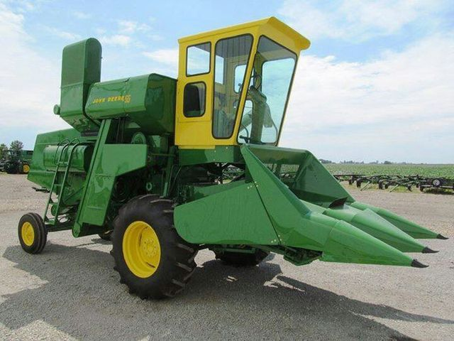
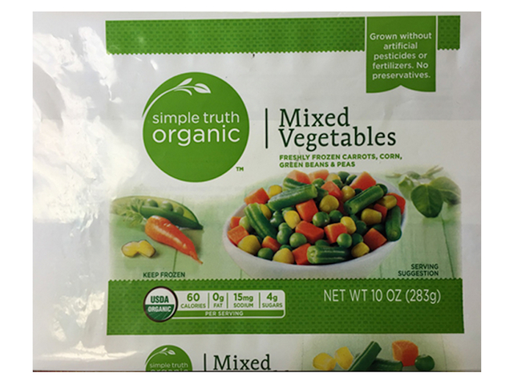

AgroTech
One stop solution for farmers
Home |
Fertilizers |
|
Govt. Policies |
Market-Price |
Machine learning | Contact |
Our Audacious Goal: A Machine Learning system on every farm.
Our systems know what a plant is doing every day of its life from planting to harvest.
Latest technology to agriculture like ML, AI
कृषि में नवीनतम प्रौद्योगिकी जैसे Ml,AI
Make
Money
पैसा बनाएं
Save
Time
समय बचाओ
Reduce
Risk
जोखिम कम करें
1. Access the entire unbiased seed market
संपूर्ण निष्पक्ष बीज बाजार तक पहुंचें
2. Monitor in-season real time crop stages
3. Capture timely alerts to potential pests or issues
संभावित कीट या मुद्दों पर समय पर अलर्ट कैप्चर करें
Use Farmer-designed tools
Monitor in-season real time crop stages
Simulate production options
Capture timely alerts to potential pests or issues
Benchmark production
Harness Big Data & IoT for actionable decisions
What is our main features?/ हमारी मुख्य विशेषताएं क्या हैं?
We're a one stop solution for your agricultural problem.
हम आपकी कृषि समस्या के लिए एक बंद समाधान हैं।

latest machines
नवीनतम उपकरण

Fertilizers & seeds
खाद बीज
Govt. Policies
सरकारी नीतियां
Our Mission
Our motto is to maximize the productivity with minimum input & empower the farmers of Country.
Our Goals
Recommend the Best Seed Choice for fields from the entire seed market to:
increase yields by up to 20%
improve net farm income by up to 25%
and to:
predict planting conditions, growth stages, harvest conditions and crop yields within 95% accuracy